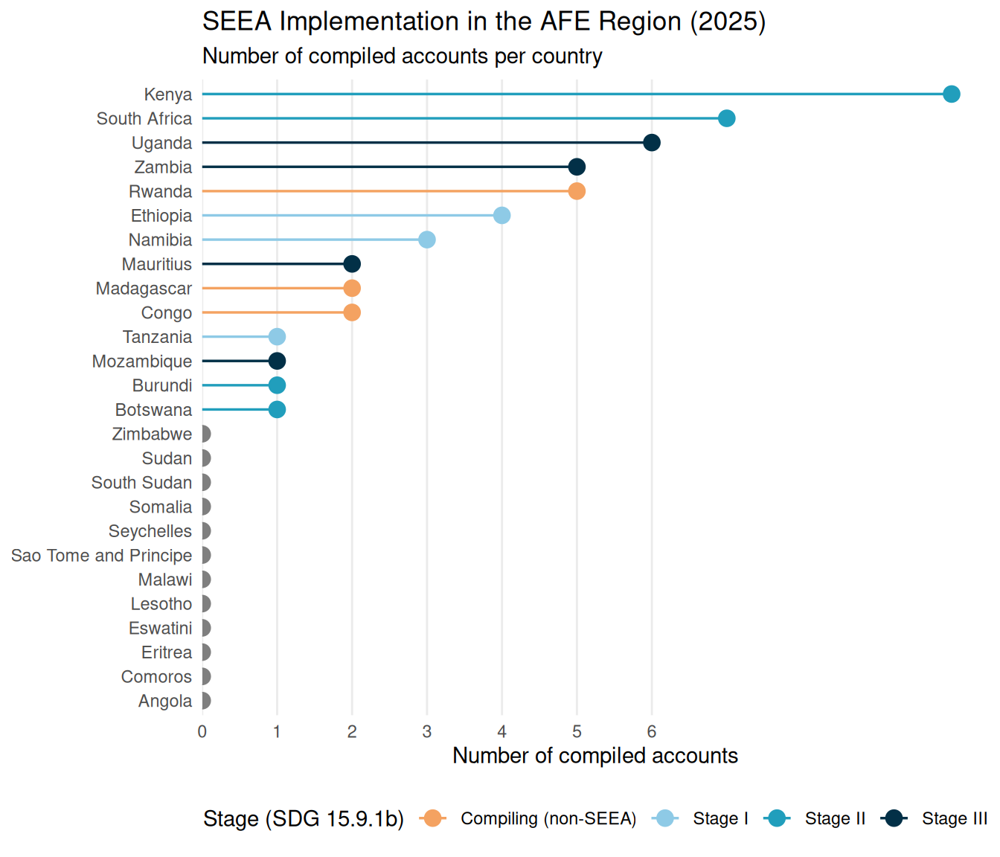
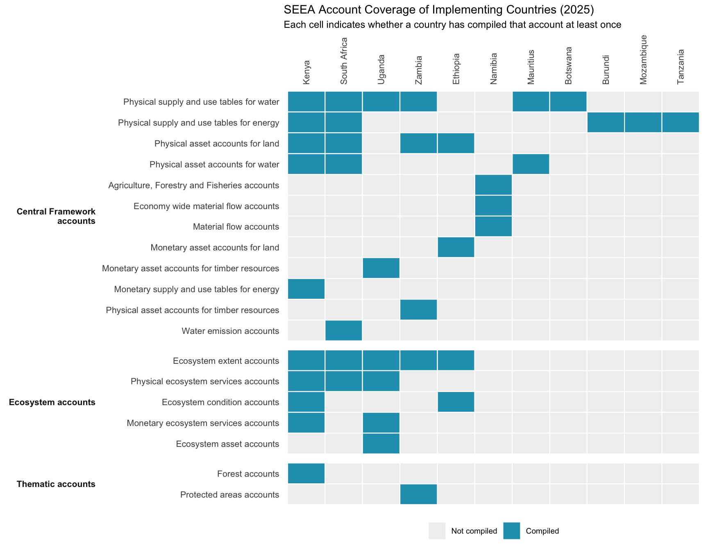

Diagnostic Review and Analytical Opportunities
Introduction
The System of Environmental Economic Accounting (SEEA) (European Commission et al., 2013) is the international statistical standard for measuring the environment and its relationship with the economy.
Regional Assessment Dataset in El Salvador
Data Sources and Scope
The 2025 Global Assessment of SEEA Implementation, coordinated by the United Nations Statistics Division (UNSD), documents the state of natural capital accounting across all UN member states. This review draws on the Africa and Far East (AFE) subset of that dataset, covering 26 countries in Eastern and Southern Africa. For each country, the dataset tracks whether 36 distinct SEEA accounts, spanning the SEEA Central Framework (CF), SEEA Ecosystem Accounts (EA), and a set of Thematic Accounts, have been compiled at least once.
The variable of interest, Compiled, reflects whether a country has produced a given account, based on either self-reported data from the country’s national statistical office or a responding line ministry, or through imputation by the assessment team where direct responses were unavailable. Accounts are grouped into three broad categories: the SEEA CF covers material and monetary flow and asset accounts; the SEEA EA covers ecosystem extent, condition, services, and monetary asset accounts; and Thematic Accounts cover specialised topics such as forests, ocean, and protected areas.
Implementation Status
Of the 26 AFE countries assessed, 11 are actively implementing the SEEA in some form, while the remaining 15 have not yet begun. Among those implementing, countries are classified by their stage of progress under the SDG 15.9.1b indicator: Stage I countries have compiled at least one SEEA CF account; Stage II countries have additionally compiled at least one SEEA EA or Thematic account; and Stage III countries demonstrate a sustained institutional programme of accounting across multiple account types. In the AFE region, 3 countries are at Stage I, 4 at Stage II, and 4 at Stage III, indicating that while uptake is modest, a meaningful cluster of countries has progressed beyond initial experimentation.
Account Coverage
Across all 11 implementing countries, a total of 29 account-compilations have been recorded covering 16 distinct account types out of the 36 tracked. The most widely compiled accounts are the Physical Supply and Use Tables (PSUTs) for energy and water, each compiled by 5 countries, reflecting their relative accessibility as entry-level accounts and their relevance to the region’s resource management priorities. Physical asset accounts for land follow, compiled by 3 countries. Beyond this initial tier, uptake drops sharply: monetary accounts, which require additional institutional capacity and data integration, and ecosystem accounts appear in only 1 to 2 countries each, with thematic accounts for forests and protected areas at the same level.

Table 1 provides an aggregate view of account group coverage, showing the number of distinct accounts within each group, how many individual account-compilations have been recorded across implementing countries, and how many countries have compiled at least one account in each group.
| Account Group | Accounts tracked | Compilations recorded | Countries compiling at least one | % of possible cells |
|---|---|---|---|---|
| SEEA Central Framework accounts | 25 | 20 | 11 | 7.3 |
| SEEA Ecosystem accounts | 5 | 7 | 3 | 12.7 |
| Thematic accounts | 6 | 2 | 2 | 3.0 |
Gaps and Opportunities
The data reveal a clear two-tier structure in AFE natural capital accounting. A small leading group, South Africa, Uganda, Ethiopia, and Kenya, has built programmes that span multiple account types and framework components, and are the natural candidates for peer learning and south-south knowledge exchange. A second tier of countries, namely Namibia, Mauritius, and Zambia, has made a start but remains anchored in the CF accounts, suggesting that targeted support to expand into ecosystem and thematic accounts would yield the highest marginal gains.
The greatest gaps lie in monetary accounts, where valuation capacity and statistical infrastructure requirements are highest, and in SEEA EA accounts, particularly ecosystem condition and monetary ecosystem services accounts. Thematic accounts for oceans and biodiversity, which are especially relevant given the region’s coastal and savannah ecosystems, are essentially absent. These gaps define the primary areas for capacity development support under this project, and they are explored further in the analytical results chapter.
References
European Commission, Organisation for Economic Cooperation and Development, United Nations, & World Bank. (2013). System of Environmental-Economic Accounting 2012. United Nations.